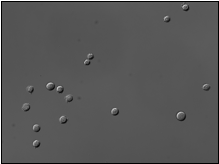
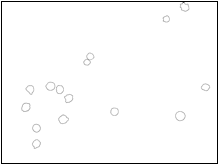

Broad Bioimage Benchmark Collection
Annotated biological image sets for testing and validation
Chinese Hamster Ovary Cells
Accession number BBBC030 · Version 1
Example images
-
DIC image
-
Ground truth
Images
The image set consists of 60 Differential Interference Contrast (DIC) images of Chinese Hamster Ovary (CHO) cells. The images are taken on an Olympus Cell-R microscope with a 20x lens at the time when the cell initiated their attachment to the bottom of the dish.
Ground Truth (Outlines) O
We have hand-segmented the images and saved their contours. The suggested method for DIC reconstruction algorithm ranking is the comparison of the area under the receiver operating characteristic (ROC) curve (also called AUC, A' or c-statistic).
Published results using this image set
The proposed data set will be evaluated in a publication to be submitted.
Recommended citation
"We used image set BBBC030v1 [Koos, K., Molnár, J., Kelemen, L., Tamás, G., & Horvath, P. (2016). DIC image reconstruction using an energy minimization framework to visualize optical path length distribution. Scientific reports, 6.] from the Broad Bioimage Benchmark Collection."
Copyright
 The BBBC030v1 image set
are licensed under a Creative Commons Attribution 3.0 Unported License by Peter Horvath and Krisztián Koós.
The BBBC030v1 image set
are licensed under a Creative Commons Attribution 3.0 Unported License by Peter Horvath and Krisztián Koós.